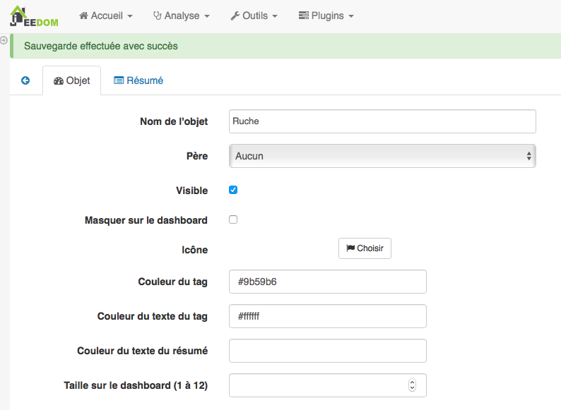
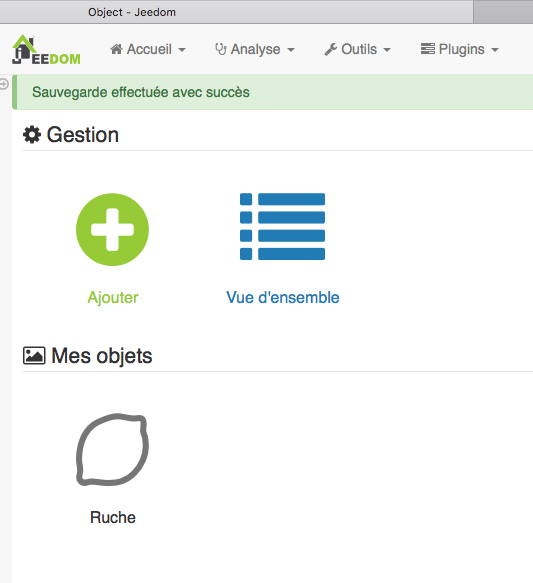

Installation¶
Installation Standard¶
Etape 1: Zigate¶
La Zigate peut être connectée au port USB, par module Wifi ou sur le port GPIO d’un Raspberry Pi.
Pour les utilisateurs très avertis, il existe des Solutions Multiples et Distantes plus complexes qui amène de la flexibilité que j’utilise personaellement.
Pour la PiZiGate, des étapes spécifiques sont nécessaires, Installation PiZiGate.
Le firmware supporté est le dernier publié avec un petit décalage le temps d’adapter Abeille dans cet entretemps c’est l’avant derniere version qui est supportée. Pour mettre a jour le Installation Firmware.
Etape 2: Widget¶
L’installation de Widget est une option permettant d’avoir un visuel plus joli.
Attention
Sur les dernières versions de Jeedom, il y a des problèmes de rafraichissement de widget.
Vous pouvez installer quelques widgets (officiels) pour que le rendu soit plus sympa
baromètre pour le capteur Xiaomi Carré (dashboard.info.numeric.barometre )
thermomètre pour les capteurs Xiaomi ronds et carrés (dashboard.info.numeric.tempIMG)
humidité pour les capteurs Xiaomi ronds et carrés (dashboard.info.numeric.hydro3IMG)

Etape 3: Référence¶
Créer un objet Jeedom pour retrouver rapidement et facilement les nouveaux équipements.
 Tous les nouveaux équipements seront attachés à cet objet.
Etape 4: Market¶
Installation du plugin Depuis le market. Rien de spécifique. Suivre la procédure classique.
Etape 5: Activation¶
Aller sur « Plugins » et cliquer sur « Gestion des plugins ».
Cliquer sur « Abeille »
Cliquer sur « Activer »
Choisir le niveau de log (debug si besoin) et cliquer sur « Sauvegarder »
Lancer l’installation des dépendances avec le bouton « Relancer » et patienter (vous pouvez suivre l’avancement dans le fichier de log: Abeille_dep)
Patienter 2-3 minutes jusqu’à l’obtention du statut « OK »
Puis:
Si vous avez un Zigate USB, dans « Abeille Serial Port : » choisissez le bon port /dev/ttyUSBx.
Si vous avez une Zigate Wifi dans « IP (IP:Port) de Zigate Wifi : » indiquer son adresse IP.
Si vous avez un Zigate GPIO, dans « Abeille Serial Port : » choisissez le bon port /dev/ttyS0.
Définir l“« Objet Parent » (C’est ici que les objets « Abeille » se créeront par défaut)
Démarrer les Démons en cliquant sur la flèche verte « (Re)Démarrer »
A noter: Toute sauvegarde de la configuration provoque une relance du cron du plugin et donc un rechargement de la configuration.
Avancés¶
Installation pour les utilisateurs avancés
Depuis Github¶
Connecter vous par ssh sur votre Jeedom
Zip¶
1 2 3 4 5 | cd /var/www/html/plugins/
mkdir Abeille
cd Abeille
unzip le fichier téléchargé de GitHub dans le répertoire
cd ..
|
Git¶
Directement avec git (Le plus simple et le plus rapide)
1 | git clone https://github.com/KiwiHC16/Abeille.git Abeille
|
Alternative¶
Alternative : Installation du plugin Abeille avec github depuis le market
Aller sur Configuration (Roues crantées) puis Configuration
Dans l’onglet « Mise à jour », sélectionner en dessous l’onglet Github et cocher la case « Activer Github ». Cliquer sur « Sauvegarder ».
Aller sur « Plugins » et cliquer sur « Gestion des plugins ». Cliquer sur « Sources »
Dans « Type de source », sélectionner Github
ID logique du plugin: Abeille
Utilisateur ou organisateur: KiwiHC16
Nom du dépôt: Abeille
Branche: master
Cliquer sur Enregistrer.
Mise a jour¶
Mise a jour du plugin
Market¶
Mise à jour à partir du market Rien de particulier, suivre la méthode de base de Jeedom
Github¶
Mise à jour à partir de github
1 2 | cd /var/www/html/plugins/Abeille
sudo git pull https://github.com/KiwiHC16/Abeille
|
Bidouilles¶
Pour écraser des « bidouilles » locales :
1 2 3 | cd /var/www/html/plugins/Abeille
sudo git reset --hard HEAD
sudo git pull https://github.com/KiwiHC16/Abeille
|
Droits¶
Pour appliquer les bons droits :
1 2 | chmod -R 777 /var/www/html/plugins/Abeille
chown -R www-data:www-data /var/www/html/plugins/Abeille
|